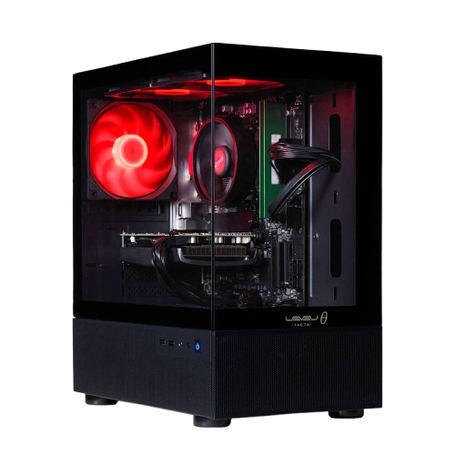

Activities

クリスマスバナー
用途: ペットショップのECサイトに掲載するクリスマスバナー。
デザインの意図: クリスマスの雰囲気を前面に出しつつ、ペットとの暖かい時間をイメージさせるデザイン。サンタ帽子をかぶった犬や猫のイラストを使用して、購入意欲を刺激。
制作・修正時間 2時間
調査・企画 3時間

夏のセールバナー
用途: ファッションECサイトの夏のセール告知用バナー。
デザインの意図:
夏の爽やかさとセールのワクワク感を組み合わせたデザイン。ビビッドな色合いとトロピカルな要素を取り入れて、夏のショッピングへの誘導を強化。
制作・修正時間 2時間
調査・企画 3時間


お題の説明お題の説明お題の説明お題の説明お題の説明お題の説明お題の説明お題の説明お題の説明お題の説明お題の説明お題の説明お題の説明お題の説明お題の説明お題の説明お題の説明お題の説明お題の説明お題の説明お題の説明お題の説明お題の説明お題の説明お題の説明お題の説明お題の説明
制作・修正時間 2時間
調査・企画 3時間